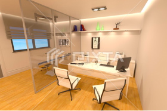
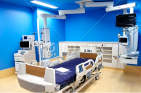
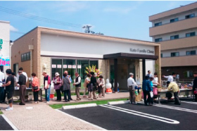

Flow開業までの流れ
- 基本コンセプトの
策定 - 開催場所の決定
- 資金調達
- 内装設計
- 機器選定
- 広告戦略
- 人財採用
- 届出・申請
- 内覧会
- ご開業
基本コンセプトの策定
クリニックを経営・運営していく上で大切なことは、『経営理念』や『診療方針』を明確にする事です。「どのようなリニックをめざすのか」、「どのような療を提供していきたいのか」、「どのな患者層が対象となるのか」を慎重に考コンセプトを固めていくことが大切です。
開催場所の決定
立地条件はクリニックを経営に大きく影します。昼間人口（就労者）・夜間人口（住民）の数や、競合医療機関、交通のなど、色々な要素で、診療圏調査なども使し慎重に選びましょう。
資金調達
クリニックの開業には、診療科目や診為によって変わりますが、およそ数千から1億円かかる場合があります。自己金で賄うにはなかなか難しい場合があすし、返済に余裕を持った借入とは何考えて調達しなければなりません。
内装設計
医療機関の内装は、やさしい見栄えやはもちろん、設置する機器によっては工事が発生する場合などもあり、設計事を行う業者は専門の業者に依頼するです。
機器選定
医療機器・・・・・・・・・・・・・・・・・・・・・・・・・・・・・・・・・・・・・・・・・・・・・・
広告戦略
現代においては競合となる医療機関が業する土地に必ずと言っていいほど存ます。まずは新規に開院することを知もらい、また継続的に情報発信して患んに認知して頂かなくてはなりません
人財採用
医療事務スタッフ、看護師、リハビリスタッフ・・・診療科によって職種や必要人数は異なりますが、数名のスタッフを雇用することになります。
届出・申請
保険医療機関を開業するには様々な機関に対して様々な書類を提出しなければなりません。
また、従業員を雇用する場合は健康保険や年金などの手続きも必要です。
内覧会
開院に当たってはまず地域の皆様にクリニックの存在を知って頂き、ふれあいの中で先生およびスタッフさんと患者さんとの距離を縮めることができます。・・・・・・